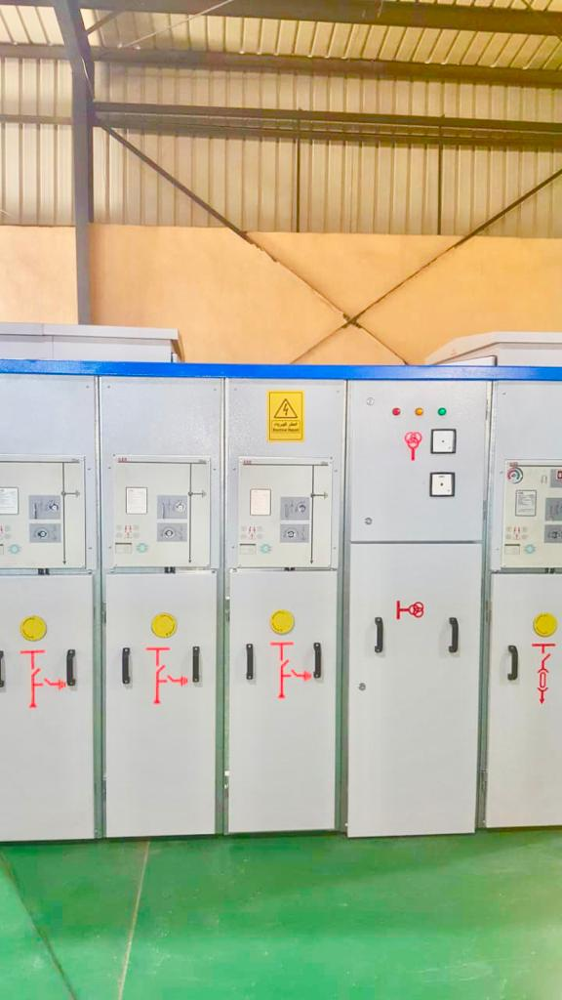
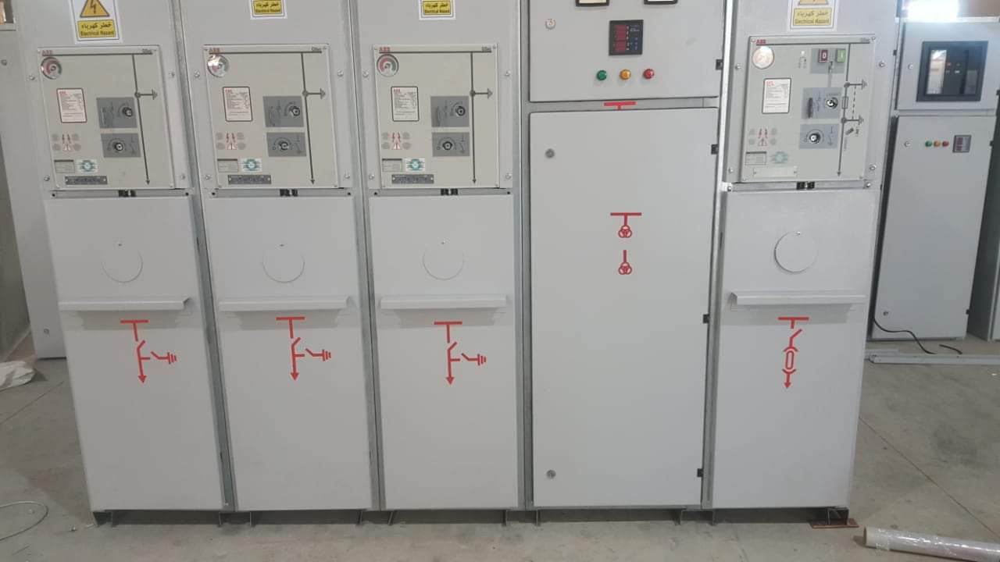

<div id="back">
  <div>
    <header>
      <h1 style="color:#0b5ed7; margin-top: 100px;">
        SF6 Ring Main Unit:-
      </h1>
      <hr style="color: #0b5ed7  ; height: 2px; width: 30%; margin-left: 100px;"  >
    </header>
    <div  id="sl" >
      <swiper [config]="config">
        <div class="swiper-wrapper">
            <div class="swiper-slide">
              
                </div>
            <div class="swiper-slide">
                   
                </div>
                <div class="swiper-slide">
                   
                </div>
            </div>
             <!-- Add Pagination -->
             <div class="swiper-pagination"></div>
             <!-- Add Arrows  -->
             <div class="swiper-button-next"></div>
            <div class="swiper-button-prev"></div>
        </swiper>
        <div class="container">
          <p>Rated Voltage:- 12KV or 24KV.
            Rated Current:- 630A.
            Short circuit current:- 25KA .
            It is a three phase SF6 medium voltage Ring main unit, manufactured by MRZ,
            available for indoor&outdoor installation, is made of sheet steel,
            is painted with a light grey electrostatic powder painting, the finish coat is grey color.
            It is designed, built and tested according to the IEC 62271-103, IEC 62271-105, IEC 60282-1& IEC 62271-102 standards
            .Type tests of cable L.B.S  acc. To IEC 62271-103,Type tests of fused
             L.B.S acc. To IEC 62271-103, IEC 60282-1&IEC62271-105,Type tests of earthing switch
              acc.To IEC 62271-102,Testing of the fuses are acc.To  IEC 60282-1.

            </p>
          </div>
    </div>
  </div>


</div>
